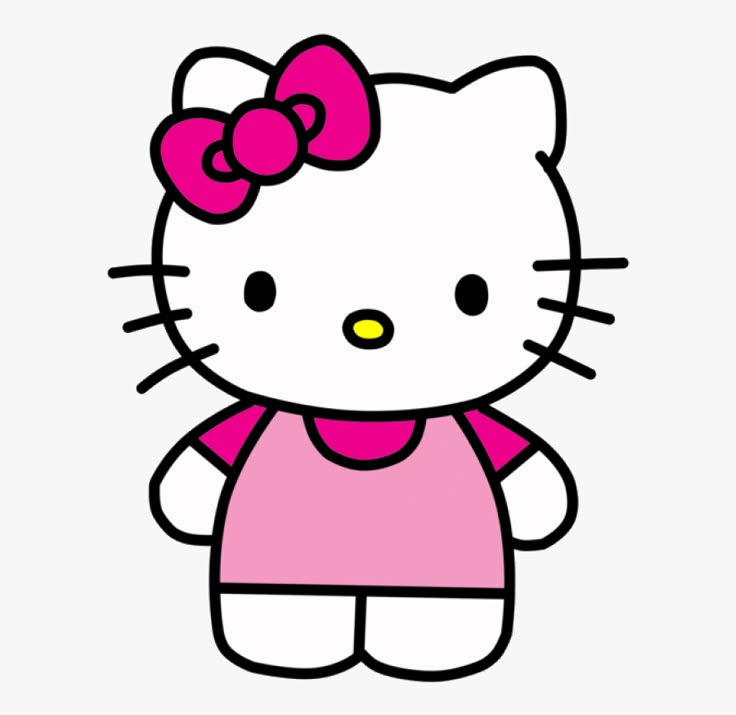

Hello Kitty
Global Brand Ambassador | Business & Marketing Icon | Spreading Happiness Worldwide 🎀
Contact
✉️ hello.kitty@sanrio.com
🌐 www.hellokitty.com
📞 +44 020 7946 0123
Description
Business and Marketing Graduate with extensive experience in branding, merchandising, and global marketing. A friendly and hardworking icon seeking opportunities to spread happiness, kindness, and cuteness through creative and engaging projects.
Education
London Academy of Charm & Friendship
Certificate in Cuteness & Communication, 1974
Experience
Global Brand Ambassador
Sanrio | 1974 – Present
- Represented Sanrio in various media, merchandise, and international events, promoting positivity and friendship worldwide.
- Partnered with global brands for collaborations in fashion, cosmetics, and technology, reaching millions of fans.
- Engaged with audiences through digital content, television series, and theme parks.
Baker & Café Owner
Hello Kitty Café | Various Locations | 2010 – Present
-
Created a charming café experience featuring Hello Kitty-themed desserts and drinks.
- Managed branding, customer engagement, and product development to enhance the fan experience.
- Hosted events and collaborations to promote creativity and community spirit.
Children’s Book Author & TV Star
Hello Kitty & Friends | Various Studios | 1980 – Present
- Starred in multiple animated series and movies, teaching life lessons on kindness, teamwork, and friendship.
- Published books and comics enjoyed by children and fans of all ages.
- Developed a recognizable, family-friendly persona beloved by generations.
Skills
- Friendship & Kindness - Naturally gifted in making friends and spreading joy.
- Baking & Cooking - Expert in making adorable pastries and themed desserts.
- Fashion & Design - Recognized for an iconic red bow and timeless style.
- Multilingual Communication - Speaks the universal language of love and happiness.
- Problem-Solving - Always finds creative and cheerful solutions to everyday challenges.
Awards & Recognitions
Cutest Character Award – Multiple wins, Sanrio Awards
Global Friendship Ambassador – UNESCO, 2008
Lifetime Achievement in Cuteness – International Pop Culture Summit, 2015
Hobbies & Interests
- Baking sweet treats
- Spending time with friends & family
- Exploring new places
- Collecting cute accessories
- Spreading happiness everywhere!
References
Available upon request from My Melody, Keroppi, and Badtz-Maru. 🎀